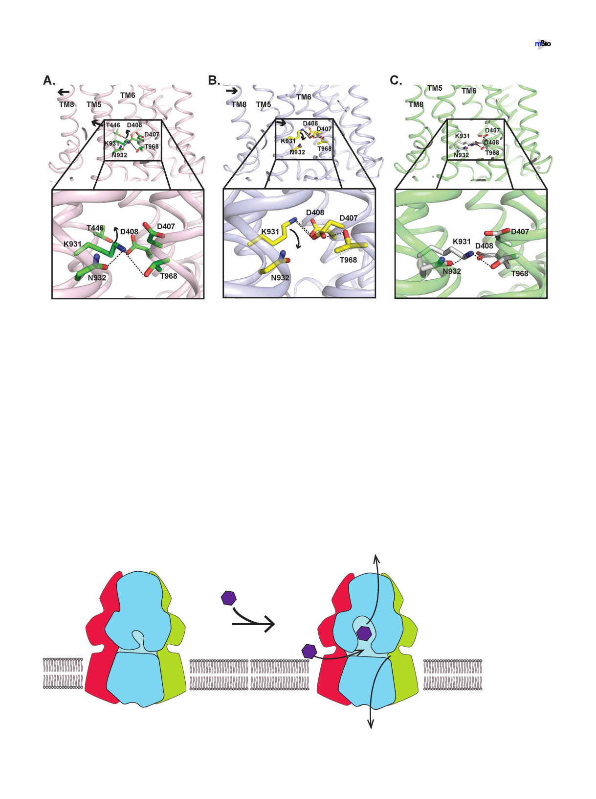

Su et al.
®
FIG 6 Proposed mechanism of proton transfer within the proton relay network of AdeB. (A) Amino acid side-chain arrangement of the resting state of AdeB.
The arrows indicate the predicted change in conformation and movement of side chains of amino acids when the AdeB pump shifts its conformation from the
resting state to binding state within the transport cycle. (B) Predicted arrangement of the amino acid side chains in the binding state of AdeB based on the
structure of the binding protomer of the homologue CmeB pump. The arrows indicate the predicted change in conformation and movement of side chains
of amino acids when the AdeB pump shifts its conformation from the binding state to extrusion state within the transport cycle. (C) Predicted arrangement
of the amino acid side chains in the extrusion state of AdeB based on the structure of the extrusion protomer of the homologue CmeB pump.
D407, allowing these two residues to form a hydrogen bond (Fig. 6B). This conforma-
tional state is also stabilized by the contribution of D408, which interacts with K973 to
form another hydrogen bond. Presumably, an acidic proton from the carboxylate
oxygen of the side chain of D407 may then transfer to the side-chain nitrogen atom of
K973. Subsequently, the side chain of this protonated lysine may launch and point
toward the cytoplasm, allowing it to form a hydrogen bond with T968 (Fig. 6C). It is
likely that D408 may be involved and participate in providing electrostatic interactions
to stabilize this transition process in order to advance the transport cycle and shift the
AdeB pump to its extrusion form (Fig. 6C). The next step is that this proton may
continue to transfer from K973 to T968 and eventually to the cytosol to complete the
proton transfer process. N932 may be involved in stabilizing this proton transfer
process. The net result is that the energy gained from proton transfers should be able
Periplasm
H+ H+
H+ H+
H+ H+
H+
H+
H+
H+ H+ H+
H+
H+
H+
H+
H+ H+
Cytoplasm
H+
H+
H+
H+
H+
FIG 7 Proton influx and drug efflux are coordinated within the transport cycle. This schematic diagram depicts our hypothesis that the
influx of protons and efflux of drugs are synchronized and coupled with each other to function.
July/August 2019 Volume 10 Issue 4 e01295-19
mbio.asm.org 10